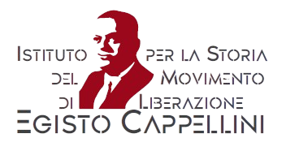

Congresso dell'ANPI di Urbino - novembre 2026
Intervento di Ermanno Torrico, presidente dell'Istituto Cappellini
Porto il saluto caloroso dell’Istituto “Cappellini” al Congresso e vorrei aggiungere, se mi è consentito, alcune considerazioni.
Il Congresso nazionale dell’ANPI si tiene in una fase politico-sociale molto difficile e problematica per l’avanzare delle Destre in molti paesi sull’onda del trumpismo. In Europa preoccupa soprattutto l’avanzata delle destre in Francia, Spagna, Germania.
Per quanto riguarda l’Italia son evidenti a tutti i guasti prodotti dopo più di 4 anni da un Governo che non nasconde di essere l’erede del fascismo storico (che finisce a Salò) e, dal 1946, del MSI. Non c’é la volontà di recidere quelle radici. Il capo del Governo non riesce a pronunciare la parola “Repubblica” sostituita da quella di “Nazzione”, con due zeta.
A conferma di questo il presidente del Senato La Russa ha addirittura dichiarato che «il fascismo lo hanno voluto gli italiani e che quindi è stato una scelta del popolo». Una plateale falsificazione della storia perché il fascismo è arrivato al potere con il consenso della monarchia, i brogli elettorali, la violenza, i delitti contro gli oppositori e la dittatura. L’avesse detto a scuola, da studente, a La Russa gli davano tre.
Si vogliono convincere gli italiani che Mussolini “ha fatto anche cose buone”, che il fascismo “non è il male assoluto” e che persino i treni arrivavano in orario, mentre si moltiplicano le vie e i luoghi dedicati ad Almirante e ai ras del fascismo.
Ma non basta mai perché si è giunti al punto di celebrare alla Camera, con il patrocinio del Ministero della Cultura, un personaggio come Pino Rauti nel centenario della nascita. Quel Rauti che nel 1956 fondò “Ordine Nuovo” e teorizzò la “strategia della tensione”. L’organizzazione neofascista che i tribunali hanno riconosciuto responsabile delle stragi di Piazza Fontana (Milano,12 dic.1969) e di Piazza della Loggia (Brescia, 28 maggio 1974).
Attenzione, si tratta di una cosa grave proprio perché è una iniziativa istituzionale dietro cui c’è l’obiettivo di banalizzare e normalizzare il fascismo. E mentre La Russa fa dei comiziacci, Meloni cerca in tutti i modi di riscrivere la Costituzione per legge ordinaria con un Parlamento svilito dalla maggioranza al rango di teatro di provincia buono per comici falliti e mestieranti senza talento.
Per questi motivi occorre che l’Antifascismo si opponga con forza ai disegni della Destra e il documento congressuale dell’Anpi su questo punto è chiaro quando sottolinea la necessità di difendere la Costituzione repubblicana e di combattere ogni forma di revisionismo storico. Nello stesso tempo è importante anche comprendere le trasformazioni sociali in corso e il disagio giovanile se vogliamo essere un punto di riferimento morale e civile per quanti si riconoscono nei principi fondamentali della Costituzione repubblicana.
In un momento storico così grave e pericoloso per la pace mondiale, il Cappellini condivide con il Documento congressuale che sia fondamentale e necessaria una presa di posizione netta per la Pace, che si espliciti in iniziative contro il riarmo e la preparazione alla guerra. Viviamo in un mondo senza regole in cui il dominio è quello della forza e forse servono, come diceva Berlinguer, “pensieri lunghi”.
È necessario che il Governo riconosca lo Stato di Palestina e che si dica basta al genocidio del popolo palestinese. Vanno interrotti i rapporti economici e militari con lo Stato di Israele che non potrà neppure essere criticato, pena l’accusa di antisemitismo, dopo l’approvazione del DdL contro l’antisemitismo che servirà solo a proibire le manifestazioni Pro-Pal e, come ha scritto oggi su “La Stampa” Anna Foa, «servirà a combattere le critiche al governo israeliano».
Non possiamo tacere che l’Europa applichi una doppia morale: sanzioni alla Russia ma nemmeno un buffetto ad Israele. Siamo anche contrari agli aiuti finanziari e militari al governo ucraino. Si dovrebbe invece favorire un processo diplomatico di pace nel rispetto di quanto stabilito dall’ OSCE, l’Organizzazione per la Sicurezza e la Cooperazione in Europa, che sottolinea che “La sicurezza è indivisibile e la libertà di uno Stato di unirsi a una alleanza politico-militare deve tener conto delle legittime preoccupazioni di sicurezza degli altri Stati”.
Principio già sancito dalla Conferenza di Helsinki (sulla Sicurezza e la Cooperazione in Europa), del 1°’agosto 1975 e dalla Carta di Parigi del 1990.
Inutile girarci attorno e negare le responsabilità dell’allargamento smisurato della Nato lungo i confini occidentali della Russia dopo la fine dell’URSS nel 1991 (a oggi sono 32 gli Stati membri e 15 gli Stati associati per un totale di 47 Stati). Una nuova “cortina” che dalla Finlandia arriva fino al Mar Nero.
Da ultimo, ma non ultimo per importanza, voglio sottolineare la costruttiva collaborazione tra l’Anpi e l’Istituto Cappellini, non solo per la condivisione della sede da cui il sindaco voleva cacciarci, ma anche per avere sostenuto e organizzato insieme diverse iniziative culturali, come caldeggiato nel Documento nazionale.
Grazie per l’attenzione. Buon Congresso e lunga vita all’ANPI.